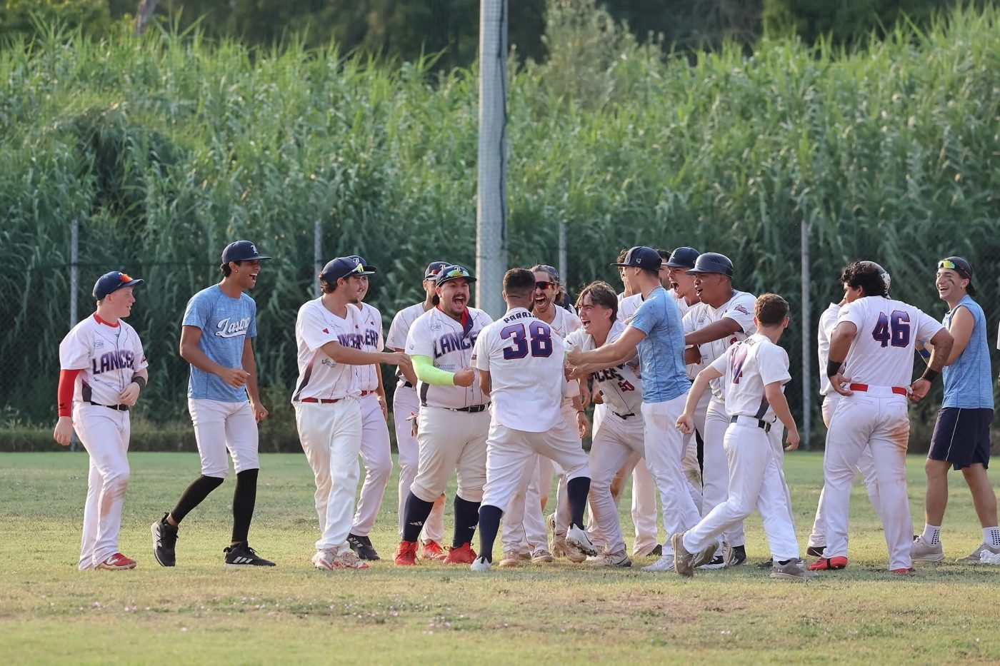

Benvenuti ai
Lancers Baseball Club

Baseball Club · Lastra a Signa · dal 1982
Il sito ufficiale dei Lancieri di Lastra a Signa: prima squadra in Serie B, settore giovanile e un campo aperto a tutti.
Serie B 2026 · Girone C
Stagione conclusa
I Lancers chiudono il campionato al 4° posto. Il nuovo calendario comparirà qui appena la FIBS lo pubblica.
16vittorie
11sconfitte
4°posto
Ultima partita
Final
PAUPadule Sesto F.no8
LANLancers9
dom 26 luglio 2026 · Lastra a Signa · 10 inning
Tabellino FIBS →Ultimi risultati
dom 26 lug
11:00vs Padule Sesto F.noIn casa · Lastra a Signa · 10 inning9 – 8Vdom 12 lug
gara 2@ Cali RomaIn trasferta · Roma · 7 inning19 – 2Vdom 12 lug
11:00@ Cali RomaIn trasferta · Roma17 – 15Vdom 5 lug
gara 2@ ArezzoIn trasferta · Arezzo · 5 inning20 – 0Vdom 5 lug
11:00@ ArezzoIn trasferta · Arezzo3 – 4Sdom 28 giu
gara 2vs ColornoIn casa · Lastra a Signa9 – 0V
11:00vs Padule Sesto F.noIn casa · Lastra a Signa · 10 inning9 – 8Vdom 12 lug
gara 2@ Cali RomaIn trasferta · Roma · 7 inning19 – 2Vdom 12 lug
11:00@ Cali RomaIn trasferta · Roma17 – 15Vdom 5 lug
gara 2@ ArezzoIn trasferta · Arezzo · 5 inning20 – 0Vdom 5 lug
11:00@ ArezzoIn trasferta · Arezzo3 – 4Sdom 28 giu
gara 2vs ColornoIn casa · Lastra a Signa9 – 0V
Classifica
| # | Squadra | V | P | % |
|---|---|---|---|---|
| 1 | Longbridge Bologna | 20 | 8 | .714 |
| 2 | Padule Sesto F.no | 19 | 8 | .704 |
| 3 | Cali Roma | 18 | 10 | .643 |
| 4 | Lancers | 16 | 11 | .593 |
| 5 | Etruscan Fighters | 16 | 12 | .571 |
| 6 | Colorno | 10 | 18 | .357 |
| 7 | Livorno 1948 | 6 | 22 | .214 |
| 8 | Arezzo | 6 | 22 | .214 |
20 settembre 2026 · Varie
Lancers Open Field, sabato 26/9 l’inaugurazione
Un nuovo spazio dove lo sport abbatte ogni barriera! ⚾️✨ Sabato 26 settembre ti aspettiamo per l’inaugurazione del “Lancers Open…29 luglio 2026 · GiovaniliLancierini al Game of Crocs 2026
Dal 23 al 26 luglio i nostri colori sono stati rappresentati al Game of Crocs 2026 di Ravenna, uno dei tornei giovanili più import…18 luglio 2026 · GiovaniliU12, una stagione da ricordare!
Si è concluso il campionato Under 12 dei Lancers, terminato il 21 giugno con una bella vittoria contro il DRK, che ha messo il sig…44anni di storia
4squadre in campo
6anni: l’età per iniziare
234notizie in archivio
Una famiglia, quattro squadre
Le nostre squadre
Foto e video